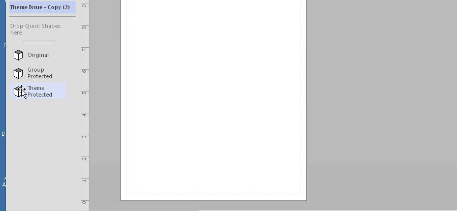
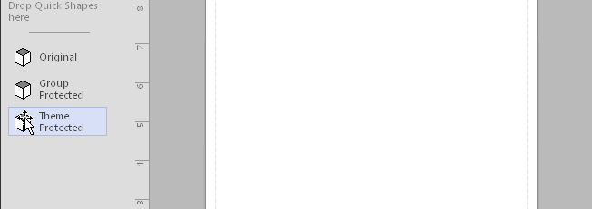

Не секрет, что механизм тем, появившийся в последних версиях Visio, иногда плохо воспринимает трафареты, рассчитанные на отсутствие тем.
David J Parker в статье "Protecting Shapes from Themes in Visio 2013+" показал основные принципы защиты от воздействия тем. Но недавно я наткнулся на случай, в котором предложенный метод защиты оказался недостаточным.
Пользователь переделывает старые трафареты под новую версию Visio и никак не может заставить их не воспринимать темы. После более глубокого изучения трафарета оказалось, что причина кроется в использовании стилей.
Со стилями Microsoft поступила оригинально. Когда-то это был основной механизм предварительной настройки форматов и им часто пользовались. При переходе к темам доступ к стилям практически исключили из GUI, но сами-то стили остались. И там внутри они не только работают, но и могут существенно влиять на поведение шейпов.
В рассматриваемом случае в мастер-шейпе был использован стиль DFD Normal, основанный на стиле Normal. Вроде, никакого криминала. Но при переходе в новую систему наследование начинается со стиля Theme. В результате, стоит только перебросить мастер из трафарета на страницу рисунка, как в документе появляется новый стиль со следующей цепочкой наследования DFD Normal => Normal => Theme.
Но стиль Theme является основой применения тем, поэтому он тащит свои установки в копию мастера в Document Stencil и в образованные от него копии. При этом защита от тем, установленная в мастер-шейпе средствами окна Protection, просто игнорируется. Все индексы из секции Theme Properties (значение по умолчанию 65534) проникают из мастер-стиля в шейп и заставляют его перекрашиваться. И это несмотря на то, что в исходном мастер-шейпе в трафарете в секции Theme Properties стоят нули. (Они там устанавливаются в момент применения защиты через окно Protection.)
Значит для восстановления справедливости нужно рвать цепочку наследования. Метод получился интересный. Если открыть мастер-шейп в трафарете на редактирование и в шейп-листе заменить нули на нули в секции Theme Properties, то цепочка наследования рвется. До операции нули были черными (то есть наследуемыми), после операции они становятся голубыми, то есть установленными локально.

Теперь трафарет начинает работать нормально, потому что индексы из стиля наткнутся на локальные нули и не пролезут в шейп.
Но есть тонкость. Стили приписаны к документу. Мы изменили стиль в трафарете. Так как стиль оригинальный, то в новом чистом документе его не будет. Значит при переносе мастер-шейпа на страницу этот стиль скопируется в документ и все будет нормально. Но это в новом документе, а что будет, если пользователь захочет воспользоваться отремонтированным трафаретом в каком-то старом документе, неизвестно. Особенно если в документе такой стиль появился из-за применения трафарета до ремонта. Скорее всего так и останется стиль с длинной цепочкой наследования.
В этом случае можно попробовать проделать ту же операцию уже в документе. Кстати, удобно это сделать макросом. Например, таким:
Sub ttt()
For i = 0 To 7
ActiveDocument.Styles.ItemU("DFD Normal").CellsSRC(visSectionObject, visRowThemeProperties, i).FormulaU = "0"
Next
End SubВ примере имя стиля жестко задано в коде.

Таким образом, с конкретным документом можно справиться даже не исправляя стили в трафарете. Пусть сначала переброшенные шейпы будут перекрашенными, но после исправления стиля в документе все они примут "правильный" вид. Последующие переброски будут подхватывать уже исправленный стиль и сразу же принимать нормальные цвета.
Следом возникнет вопрос, а какие же стили подлежат ремонту. Кстати, в рассматриваемом конкретном случае стилей в трафарет было понапихано с избытком и большая часть из них не использовалась, но все копировались в новый документ. На этот случай полезно воспользоваться вот таким макросом, который распишет только примененные в шейпах стили. Правда, с ограничением на количество уровней группировки и на жестко заданое имя трафарета. Так что, в идеале код нужно бы усовершенствовать, но на суть проблемы это не влияет.
Sub MasterStyleRelation()
Set doc = Documents("after.vssx")
For Each m In doc.Masters
Debug.Print "=== Master Name: " & m.Name
With m.Shapes(1)
Debug.Print .NameID, .Style
For Each shp In .Shapes
Debug.Print " " & shp.NameID, shp.Style
For Each shp2 In shp.Shapes
Debug.Print " " & shp2.NameID, shp2.Style
Next
Next
End With
Next
End SubВывод: переделывая старые трафареты, помните, что наличие в них стилей может потребовать дополнительных усилий при защите от тем.